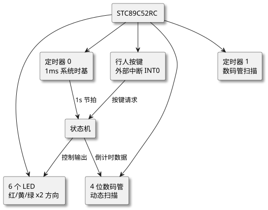
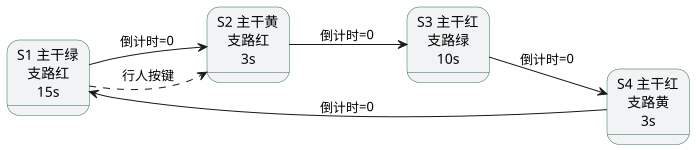

第 30 章 智能交通灯系统（STC89C52RC）
学习目标
- 掌握基于 STC89C52RC 的项目需求分析方法与系统架构设计
- 学会使用定时器中断与数码管动态扫描实现倒计时显示
- 掌握有限状态机（FSM）思想在多状态切换控制中的应用
- 理解按键消抖原理与外部中断处理行人请求的方法
- 能独立完成交通灯系统的硬件接线、程序编写与调试扩展
30.1 项目需求分析
本项目模拟一个十字路口交通灯控制系统，基于 STC89C52RC 单片机实现。具体功能需求如下：
- 双向灯组：主干道（南北向）与支路（东西向）各一组红、黄、绿三色 LED，共 6 个 LED。
- 倒计时显示：使用 4 位数码管分别显示主干道与支路当前剩余时间，单位为秒。
- 状态切换：默认循环"主干绿—主干黄—支路绿—支路黄—主干绿"，每段时长可调（默认 15s/3s/10s/3s）。
- 行人按键：支路方向设有一个按键，主干道绿灯剩余 ≥10 秒时按下可缩短至 10 秒后切换；黄灯期间请求忽略。
- 夜间模式：长按按键 3 秒进入夜间模式，两个方向黄灯同时闪烁，数码管熄灭。
30.2 系统架构设计

查看 PlantUML 源码
@startuml
skinparam defaultFontName "Microsoft YaHei"
skinparam backgroundColor #ffffff
skinparam componentStyle rectangle
skinparam shadowing true
top to bottom direction
component "STC89C52RC" as MCU
component "6 个 LED\n红/黄/绿 x2 方向" as LED
component "4 位数码管\n动态扫描" as SEG
component "行人按键\n外部中断 INT0" as KEY
component "定时器 0\n1ms 系统时基" as T0
component "定时器 1\n数码管扫描" as T1
component "状态机" as FSM
MCU --> LED
MCU --> SEG
MCU --> KEY
MCU --> T0
MCU --> T1
KEY --> FSM : 按键请求
T0 --> FSM : 1s 节拍
FSM --> LED : 控制输出
FSM --> SEG : 倒计时数据
@enduml图 30-1 智能交通灯系统架构框图
30.3 硬件设计
使用 STC89C52RC 最小系统 + LED 模块 + 4 位共阴数码管 + 1 个按键。考虑到 P0 口需接上拉电阻驱动数码管段选，端口分配如下表：
| 模块 | 引脚 | 说明 |
|---|---|---|
| 主干道红/黄/绿 | P1.0 / P1.1 / P1.2 | 低电平点亮 LED |
| 支路红/黄/绿 | P1.3 / P1.4 / P1.5 | 低电平点亮 LED |
| 数码管段选 a~g/dp | P0.0~P0.7 | 接 10k 上拉排阻，共阴数码管 |
| 数码管位选 DIG1~DIG4 | P2.0~P2.3 | 低电平选中对应位（PNP 三极管驱动） |
| 行人按键 | P3.2（INT0） | 按下接 GND，触发外部中断 0 |
| 晶振 | XTAL1/2 | 11.0592 MHz + 2×30pF |
30.4 软件设计
30.4.1 状态机设计
使用有限状态机（Finite State Machine，FSM）描述交通灯的所有状态，每个状态包含：当前灯组合、倒计时初值、下一个状态。状态切换由定时器 0 提供的 1 秒节拍驱动。

查看 PlantUML 源码
@startuml
skinparam defaultFontName "Microsoft YaHei"
skinparam backgroundColor #ffffff
skinparam state {
BackgroundColor #f1f3f5
BorderColor #2d6a4f
}
left to right direction
state "S1 主干绿\n支路红\n15s" as S1
state "S2 主干黄\n支路红\n3s" as S2
state "S3 主干红\n支路绿\n10s" as S3
state "S4 主干红\n支路黄\n3s" as S4
S1 --> S2 : 倒计时=0
S2 --> S3 : 倒计时=0
S3 --> S4 : 倒计时=0
S4 --> S1 : 倒计时=0
S1 -[dashed]-> S2 : 行人按键
@enduml图 30-2 交通灯状态机迁移图
30.4.2 关键代码示例
下面给出主程序框架与定时器中断、状态机更新、按键处理的核心代码片段。完整工程位于 /code/stc89c52rc/10-traffic-light/。
30.4.2.1 主程序框架与中断服务
#include <reg52.h>
/* ============ 引脚定义 ============ */
sbit NS_R = P1^0; sbit NS_Y = P1^1; sbit NS_G = P1^2;
sbit EW_R = P1^3; sbit EW_Y = P1^4; sbit EW_G = P1^5;
sbit KEY = P3^2; /* 行人按键，接 INT0 */
/* ============ 状态定义 ============ */
typedef enum { S_NS_GREEN, S_NS_YELLOW, S_EW_GREEN, S_EW_YELLOW } State;
State g_state = S_NS_GREEN;
unsigned char g_count = 15; /* 当前状态剩余秒数 */
unsigned char g_1ms = 0; /* 1ms 计数器 */
bit g_pedestrian_req = 0; /* 行人请求标志 */
/* 各状态灯组合：1=亮 0=灭 */
code unsigned char LAMP[4][6] = {
{0,0,1, 1,0,0}, /* S_NS_GREEN: NS绿/支红 */
{0,1,0, 1,0,0}, /* S_NS_YELLOW: NS黄/支红 */
{1,0,0, 0,0,1}, /* S_EW_GREEN: NS红/支绿 */
{1,0,0, 0,1,0} /* S_EW_YELLOW: NS红/支黄 */
};
code unsigned char STATE_TIME[4] = {15, 3, 10, 3};
void Update_Lamps(State s) {
NS_R = !LAMP[s][0]; NS_Y = !LAMP[s][1]; NS_G = !LAMP[s][2];
EW_R = !LAMP[s][3]; EW_Y = !LAMP[s][4]; EW_G = !LAMP[s][5];
}
void Timer0_Init(void) {
TMOD &= 0xF0; TMOD |= 0x01;
TH0 = 0xFC; TL0 = 0x66; /* 11.0592MHz, 1ms */
ET0 = 1; EA = 1; TR0 = 1;
}
void Int0_Init(void) {
IT0 = 1; /* 下降沿触发 */
EX0 = 1; /* 允许 INT0 */
EA = 1;
}
void main(void) {
Update_Lamps(g_state);
Timer0_Init();
Int0_Init();
while (1) { /* 主循环空转，全部逻辑在中断里 */ }
}
/* 1ms 系统节拍 */
void Timer0_ISR(void) interrupt 1 {
TH0 = 0xFC; TL0 = 0x66;
if (++g_1ms >= 1000) {
g_1ms = 0;
if (g_count > 0) {
g_count--;
/* 行人按键请求：仅主干绿且剩余>10s 时缩短到 10s */
if (g_state == S_NS_GREEN && g_pedestrian_req && g_count > 10) {
g_count = 10; g_pedestrian_req = 0;
}
} else {
/* 状态切换 */
g_state = (State)((g_state + 1) % 4);
g_count = STATE_TIME[g_state];
Update_Lamps(g_state);
}
Seg_Display(g_state, g_count); /* 刷新数码管显示 */
}
Scan_Keypad(); /* 数码管动态扫描 */
}
/* INT0 行人按键：消抖 + 置请求标志 */
void Int0_ISR(void) interrupt 0 {
unsigned char i, j;
for (i = 0; i < 20; i++) /* 软件消抖 ~20ms */
for (j = 0; j < 100; j++);
if (KEY == 0) g_pedestrian_req = 1;
}
30.4.2.2 关键设计要点解析
这段代码体现了几个关键设计点：
- 状态机+表驱动：用 `LAMP[][]` 和 `STATE_TIME[]` 两张表把灯组合与时长数据化，新增/修改状态时只需改表，业务逻辑零改动。
- 定时器 1ms 节拍：所有时序逻辑挂在 Timer0 中断上，主循环空转，结构清晰。
- 行人请求异步处理：外部中断只置标志，实际缩短动作在 1 秒节拍中执行，避免竞态条件。
- 按键消抖：INT0 中断内做 20 ms 延时再判断电平，是最简单的软件消抖方式。
30.5 完整代码与工程结构
完整工程位于 /code/stc89c52rc/10-traffic-light/，目录结构如下：
10-traffic-light/
├── main.c # 主程序 + 状态机
├── timer.c / timer.h # 定时器初始化
├── seg.c / seg.h # 4 位数码管动态扫描驱动
├── key.c / key.h # 按键扫描与消抖
├── traffic.h # 状态机接口定义
└── README.md # 编译烧录说明
使用 Keil C51 打开 traffic.uvproj，编译生成 HEX 后用 STC-ISP 烧录到 STC89C52RC 即可。运行效果：上电后系统自动进入"主干绿"状态，数码管从 15 开始倒计时，依次切换；按下 P3.2 按键可触发主干提前切换。
30.6 调试与扩展方向
调试过程中常见问题与排查思路：
- 数码管闪烁/亮度不均：动态扫描周期过长，将每位点亮时间从 2 ms 减为 1 ms。
- 状态切换时间不准：检查 Timer0 初值，11.0592 MHz 下 1 ms 初值应为 0xFC66；若用 12 MHz 晶振则改为 0xFC18。
- 按键无响应：确认 INT0 中断允许位 EX0=1 且 IT0=1；用万用表确认按键按下时 P3.2 为 0 V。
扩展方向：
- 夜间模式：长按按键 3 秒进入黄闪模式，再长按 3 秒退出，可通过在中断里累计按键按下时间实现。
- 紧急通行：增加一个独立按键进入"两向全红"模式，便于特种车辆放行。
- 串口调参：通过 UART 接收 PC 端指令实时修改各状态时长，便于工程现场调试。
- 红外检测车流：在路口加装红外对管统计车流量，自适应调整绿灯时长。
本章小结
- 项目需求分析是工程开发的起点，应明确"做什么、做到什么程度"。
- 系统架构采用"模块化 + 中断驱动"：定时器 0 提供 1 秒节拍，外部中断 0 响应行人按键，主循环空闲。
- 有限状态机是描述多状态控制问题的有效工具，配合表驱动可大幅简化代码维护。
- 按键消抖是工程必备技能，可用软件延时或硬件 RC 滤波实现。
- 实际工程需考虑调试手段（仿真、串口打印）与可扩展性（夜间模式、紧急通行、自适应控制）。
思考题与习题
- 本项目中"主干绿 15 秒、主干黄 3 秒、支路绿 10 秒、支路黄 3 秒"的时长安排是否合理？查阅实际交通规范，给出改进建议。
- 使用 11.0592 MHz 晶振时，1 ms 定时器初值为什么是 0xFC66？写出计算过程。
- 修改代码，将"行人按键仅在主干绿且剩余 >10s 时缩短至 10s"改为"剩余 >5s 时缩短至 5s"，并思考可能带来的安全问题。
- 如何用软件方式实现"长按 3 秒进入夜间模式"？给出代码思路。
- 设计一个串口调参协议，使 PC 可通过 UART 命令实时修改 4 个状态时长，命令格式自行定义。
参考文献
- 张毅刚. 单片机原理及应用——C51 编程 + Proteus 仿真（第 4 版）[M]. 北京：高等教育出版社, 2021.
- 郭天祥. 新概念 51 单片机 C 语言教程 [M]. 北京：电子工业出版社, 2018.
- STC 官方. STC89C52RC 数据手册 [Z]. 2024. https://www.stcmcudata.com/
- GB 14886—2016. 道路交通信号灯设置与安装规范 [S]. 北京：中国标准出版社, 2016.
- Michael A. Banks. Embedded Microcontrollers and Interfacing [M]. McGraw-Hill, 2018.